채팅만 쓰던 사람이 오늘 AI에 맡겨 볼 업무 7가지
영상에서 한 그대로예요. 어디를 누르는지, 붙여 넣을 문장, 이렇게 나오면 성공, 막힐 때 할 일까지 한 장에 모았어요.
- 아래 목록에서 해 보고 싶은 일을 누르세요.
- 회색 상자의 문장을 「복사하기」 → 그 AI 채팅창에 붙여 넣기.
- 「이렇게 되면 성공」과 비교해 보고, 다르면 「막히면」을 보세요.
7위 · PDF 두 개 비교하기
제미나이 · 무료 · 작년 판/올해 판 규정, 계약서 두 버전처럼 「뭐가 바뀌었지?」를 눈으로 찾던 일
순서
- gemini.google.com 에 구글 계정으로 로그인
- 입력창 왼쪽 + → 파일 업로드 → PDF 두 개를 한꺼번에 고르기
- 처음 올릴 때 안내창이 뜨면 동의
- 파일 두 개가 입력창 위에 붙으면, 아래 문장을 붙여 넣고 보내기
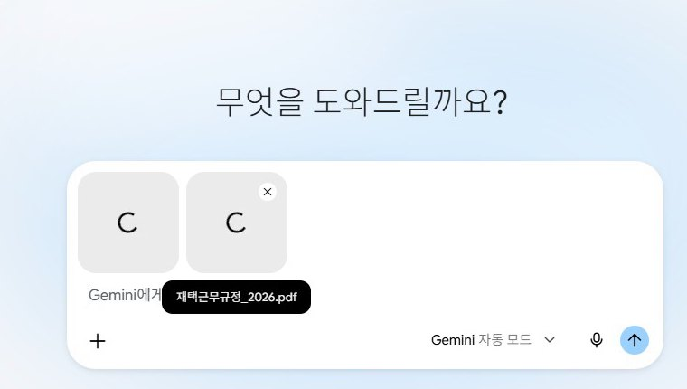
두 문서에서 달라진 부분만 표로 정리해 줘. 원문 문장을 그대로 옮기고, 확실하지 않은 건 '확인 필요'라고 써 줘.
위 표에서 실제로 바뀐 것만 세 줄로 요약해 줘. 각 줄 끝에 어느 파일에서 가져왔는지 적어 줘.
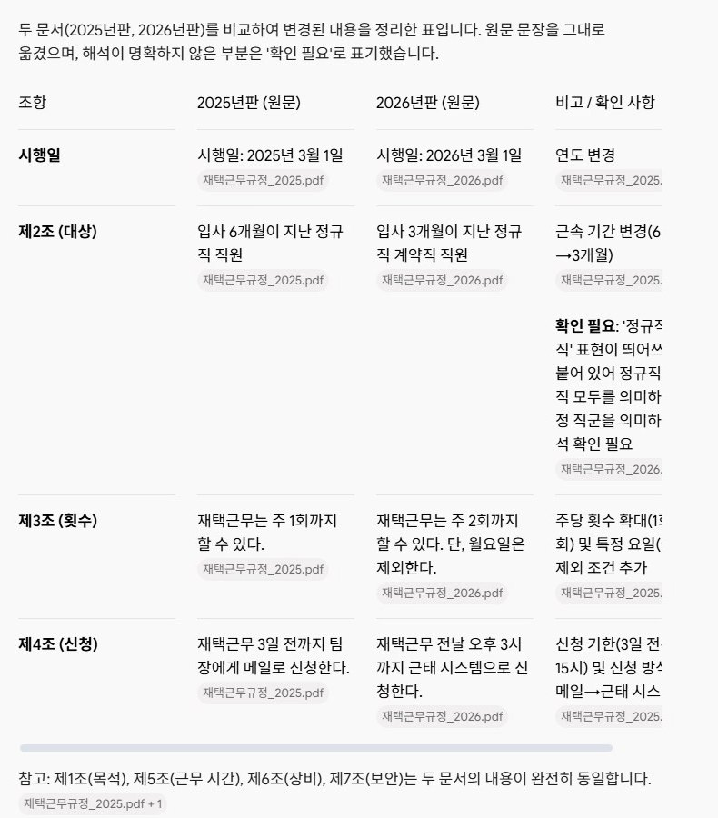
6위 · 이미지 만들기
제미나이 · 무료 · 발표 자료 표지, 블로그 대표 사진, 가게 안내문 그림
순서
- 제미나이 채팅창에 메뉴 찾을 필요 없이 그대로 쓰기
- 나온 그림을 보고 한 줄씩 고치기
- 마음에 들면 그림 위에 마우스를 올려 오른쪽 위 내려받기
발표 자료 표지에 쓸 이미지를 만들어 줘. 주제는 '(주제)'. 밝은 사무실에서 노트북 앞에 앉아 웃는 직장인, 글자는 넣지 말고 가로로.
배경만 집 거실로 바꿔 줘. 나머지는 그대로.
5위 · 보고서 초안 쓰기
챗GPT · 무료 · 회의 메모, 카톡으로 받은 숫자를 보고서 모양으로
순서
- 메모를 통째로 복사해 챗GPT 입력창에 붙여 넣기
- 그 위에 아래 문장을 쓰고 보내기
- 이어서 「워드 파일로」 한 줄 → 답 아래 파일 이름을 누르면 오른쪽에 미리 보기 → 내려받기
이 메모로 한 쪽짜리 보고서 초안을 써 줘. 결론을 맨 위에, 숫자는 바꾸지 말고, 빠진 정보는 빈칸으로 남겨 줘.
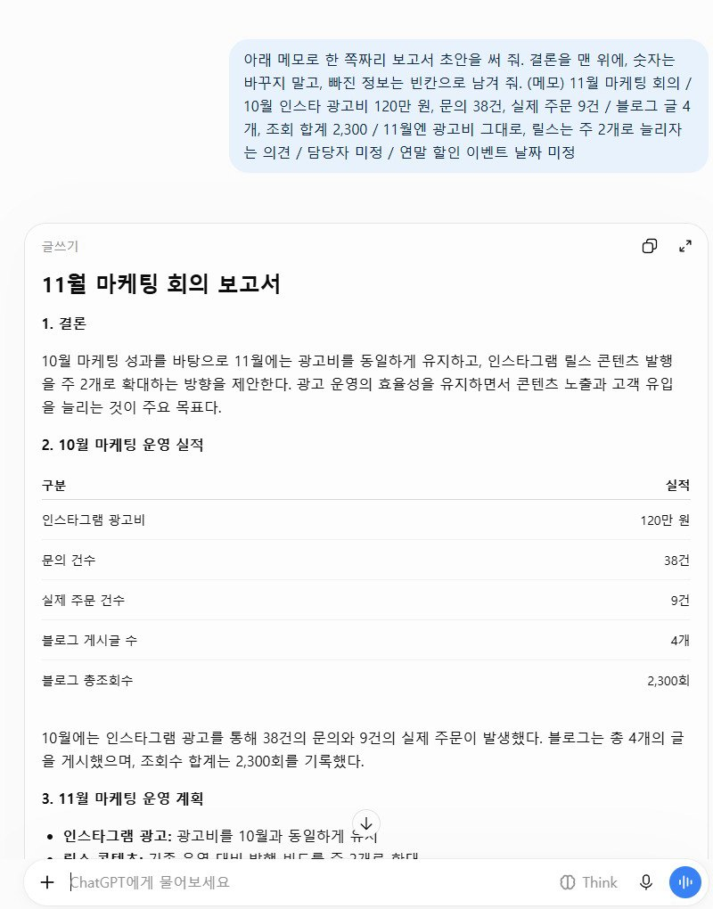
이 보고서를 워드 파일로 받을 수 있게 만들어 줘.
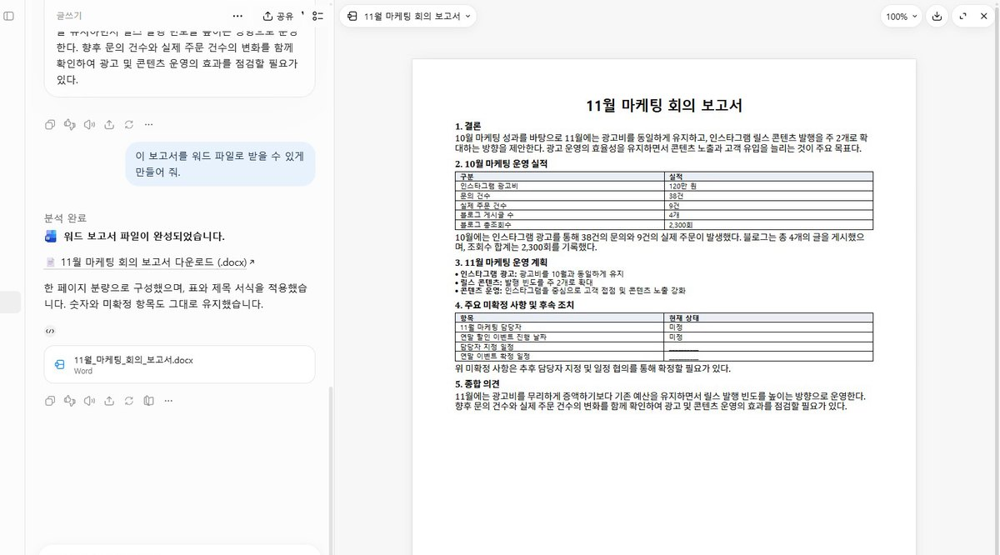
4위 · 매일 자동 브리핑
제미나이 · 무료 계정에서 됐어요 · 내가 안 물어봐도 정해진 시간에 AI가 알아서
순서
- 제미나이 채팅창에 시간과 할 일을 같이 쓰기
- 답 아래 예약 표시가 붙었는지 보기
- 바꾸거나 지울 땐 왼쪽 메뉴 예약됨
매일 저녁 8시 36분에, 오늘 나온 AI 관련 국내 뉴스 3개를 골라서 각각 세 줄로 요약해 줘. 한국어로만 답해 줘.
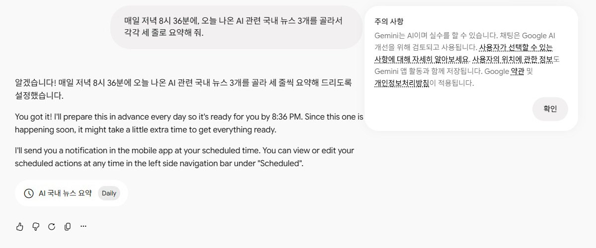
매주 월요일 아침 8시에, 이번 주 할 일을 중요한 순서로 정리해 줘. 한국어로만 답해 줘.
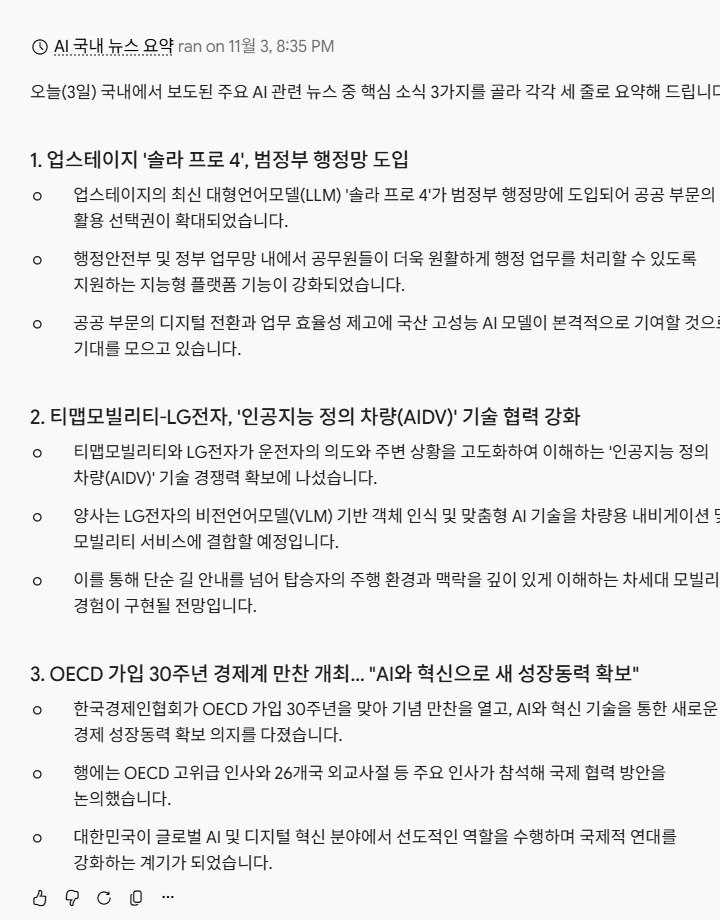
3위 · PPT 만들기
클로드 · 무료 · 그림이 아니라 진짜 PPT 파일 · 영상에서 다시 보기가 제일 많이 몰린 장면 중 하나
순서
- claude.ai 에 구글 계정으로 무료 가입
- 아래 문장을 쓰고, 그 아래에 발표할 내용만 붙여서 보내기
- 처음엔 아래쪽에 쿠키 설정 창이 떠요 — 아무거나 골라 닫기
- 5분쯤 기다리기(멈춘 것 같아도 만드는 중, 창 닫지 마세요) → 오른쪽 미리 보기 → 내려받기
아래 내용으로 5장짜리 발표 슬라이드를 PPT 파일로 만들어 줘. 한 장에 한 메시지, 글자는 크게.
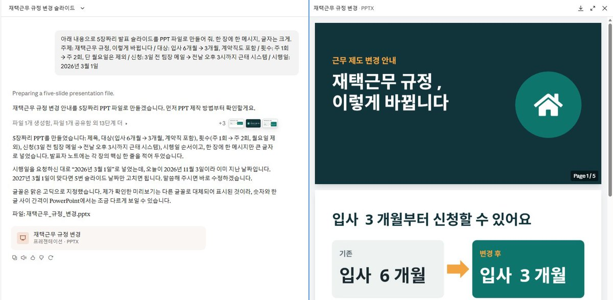
2장 글자 더 크게, 색은 남색으로.
2위 · 나만의 AI 비서 만들기
클로드 프로젝트 · 무료 · 매번 「우리 가게는…」 설명하지 않게
순서
- 클로드 왼쪽 메뉴 프로젝트 → 오른쪽 위 새 프로젝트
- 이름과 무슨 일을 할지 한 줄 → 프로젝트 생성
- 오른쪽 지침에 아래 문장을 붙여 넣고 괄호를 채우기 → 지침 저장
- 이 프로젝트 안에서 새 대화를 열고 고객 문의만 붙여 넣기
우리 가게는 (무엇을 파는 곳). 배송은 (언제 보내고 며칠 걸리는지). 교환·반품은 (기준), 단 (예외 상품)은 교환·반품 불가. 말투는 존댓말, 짧고 따뜻하게, 이모지는 1개만. 모르는 건 지어내지 말고 '확인 후 안내드릴게요'라고 써.
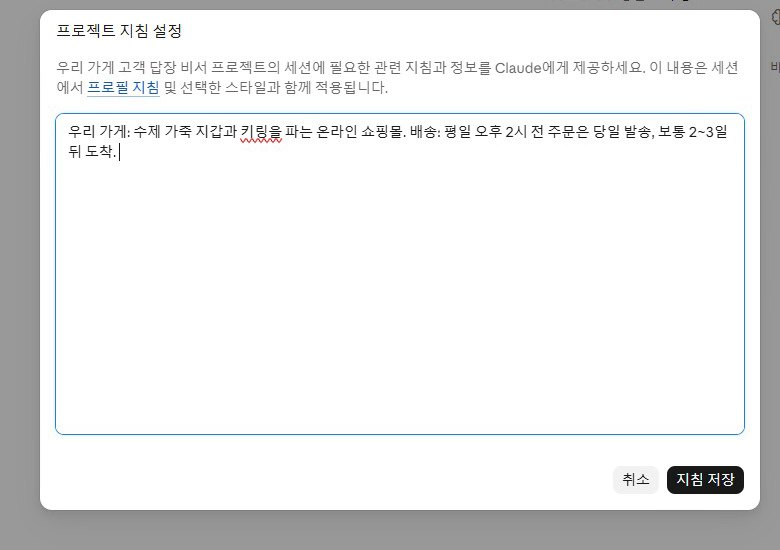
나는 (회사·팀)에서 (하는 일)을 해. 보고서는 결론을 맨 위에, 숫자는 바꾸지 말고, 모르는 건 지어내지 말고 '확인 필요'라고 써. 말투는 사내 메일처럼 짧고 정중하게.
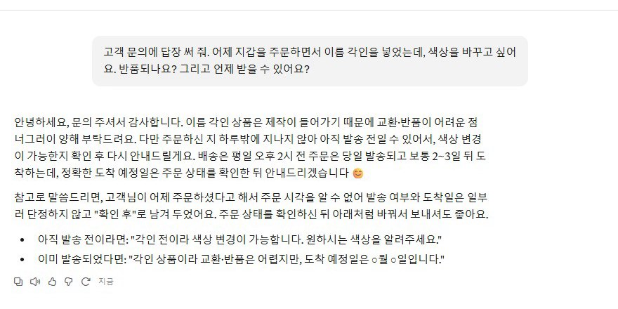
1위 · 컴퓨터를 대신 조작
클로드 데스크톱 앱 + 크롬 확장 · 유료 · 다시 보기·댓글·제목 세 가지를 합쳐 1위
준비 두 가지
- 클로드 데스크톱 앱 설치(웹사이트 말고 컴퓨터에 까는 앱)
- 크롬에 클로드 확장 프로그램 설치 + 앱과 같은 계정으로 로그인
순서
- 앱 채팅창에 아래 문장 쓰기
- 하나 할 때마다 「해도 되냐」고 물어요 → 허용
- 몇 분 기다리면 표가 나와요
크롬에서 쿠팡을 열고 '(찾을 물건)'을 검색해 줘. 가격 낮은 순으로 5개를 골라 상품명·가격·판매처를 표로 정리해 줘.
'(찾을 물건)'을 (다른 쇼핑 사이트)에서 검색해서, 방금처럼 가격 낮은 순 5개를 같은 표로 정리해 줘.
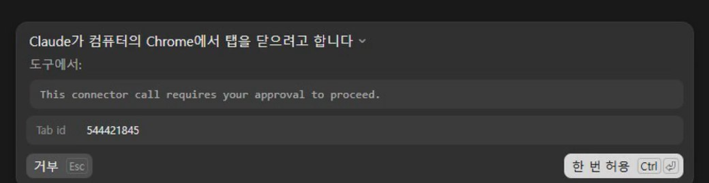
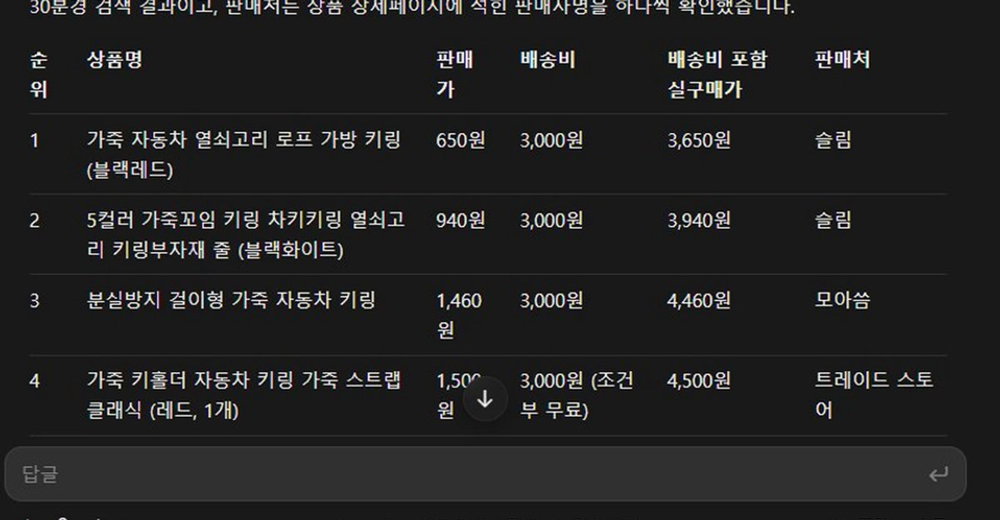
요금 · 무료로는 안 돼요. 클로드 Pro 월 20달러부터(연간 결제 시 월 17달러). 원화 금액은 결제 화면에서 확인하세요.
정말 무료로 되나요?
7개 중 6개는 2026년 11월 3~4일 무료 계정으로 직접 해서 영상에 그대로 담았어요. 다만 무료 계정은 하루 사용량·한 번에 읽는 양·이미지 장수에 한도가 있어요. 1위(컴퓨터 대신 조작)만 유료예요.
뭐부터 해 보면 좋을까요?
다 할 필요 없어요. 이번 주에 제일 귀찮았던 일 하나만 골라서 맡겨 보세요. 회사 다니시면 7위 문서 비교부터, 가게 하시면 2위 AI 비서부터 추천해요. 둘 다 10분이면 돼요.
결과가 영상이랑 조금 달라요.
AI 답은 할 때마다 조금씩 달라요. 한 번에 완벽하게 쓰려 하지 말고, 나온 것을 보고 「○○만 바꿔 줘, 나머지는 그대로」처럼 한 줄씩 고치세요.
답이 영어로 나와요.
문장 끝에 「한국어로만 답해 줘」를 붙이세요.
한도에 걸렸어요.
다음 날 이어서 하거나, 같은 일을 다른 AI로 해 보세요. 이미지는 챗GPT로도, 보고서 초안은 세 AI 모두로 돼요.
회사 문서를 올려도 되나요?
회사 규칙이 먼저예요. 밖에 올려도 되는 문서인지 확인하고, 애매하면 이름·숫자를 바꾼 예시 문서로 연습하세요.
| 업무 | 쓴 AI | 무료? |
|---|---|---|
| PDF 비교 | 제미나이 | 무료(한 번에 읽는 양 한도) |
| 이미지 | 제미나이 | 무료(하루 장수 한도) |
| 보고서 초안 | 챗GPT | 무료 |
| 매일 브리핑 | 제미나이 | 무료 계정에서 됨 |
| PPT | 클로드 | 무료 |
| AI 비서 | 클로드 프로젝트 | 무료(5개까지) |
| 컴퓨터 대신 조작 | 클로드 앱+크롬 확장 | 유료 · Pro 월 20달러부터 |
- 클로드 요금·기능: claude.com/pricing
- 클로드 프로젝트: support.claude.com — What are projects
- 클로드 파일 만들기: support.claude.com — Create and edit files
- 제미나이 예약된 작업: support.google.com/gemini/answer/16316416
- 제미나이 파일 업로드: support.google.com/gemini/answer/14903178
- GPTs 종료 안내(공식 FAQ 제목): help.openai.com — Custom GPT retirement FAQ